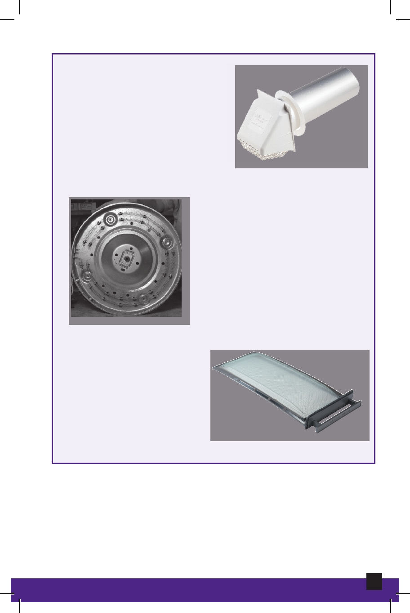

Exhaust Duct
The moisture removed from
fabrics exits through an
exhaust duct or vent. If the
exhaust duct is blocked or
restricted, the same wet air is
circulated in the dryer, greatly
increasing drying time.
Fusible Link
Heating Element
Provides the catalyst for warming
the air. The heating element
differs in gas and electric dryers.
In a gas dryer, heat is provided by
a gas burner, and in an electric
dryer, heat is provided by an
electric heating element.
Heating Element
Lint Screen
Lint, which is removed
during the drying
process, is captured on
a lint screen inside the
dryer.
Lint Screen
60
Appliance Maintenance and Repair